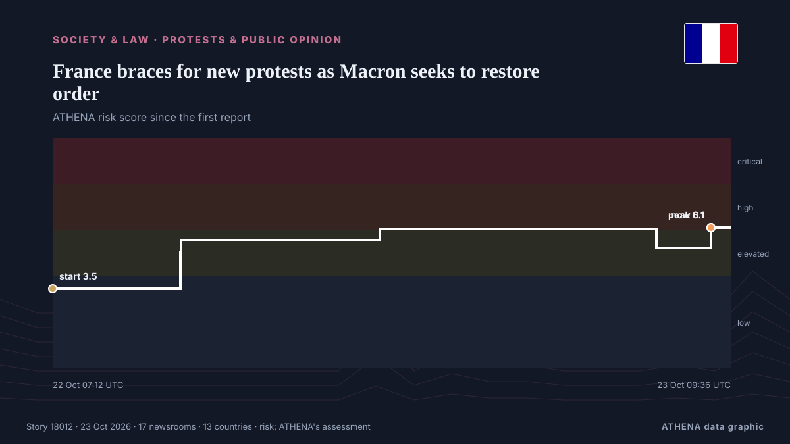

France braces for new protests as Macron seeks to restore order

French President Emmanuel Macron is set to host for the first time, representatives of high school pupils, whose protests over conditions at their schools sparked a nationwide movement. από CNA (Channel NewsAsia)
Αναφέρθηκε ανεξάρτητα από 17 μέσα σε 13 χώρες από τις 21 Οκτ, πρώτο από το RFI English· η κάλυψη εξακολουθεί να εξαπλώνεται. Το ATHENA εκτιμά τον κίνδυνο αυξημένο (5.8/10), κυρίως λόγω της σοβαρότητας της βλάβης που περιγράφεται και της γεωγραφικής και τομεακής εμβέλειάς του. Η βεβαιότητα είναι 90% (υψηλή), καθώς το επιβεβαιώνουν 17 ανεξάρτητα μέσα με μέση αξιοπιστία πηγών 77%.
Γιατί έχει σημασία: Οι νομικές αλλαγές και οι αλλαγές πολιτικής μεταβάλλουν δικαιώματα, υποχρεώσεις και δημόσιες υπηρεσίες για όσους αφορούν.
Τι άλλαξε: 17 νέες αναφορές από 15 μέσα στο 24ωρο έως 23 Οκτ.
Οι τίτλοι των ειδήσεων παρουσιάζονται στα αγγλικά, όπως δημοσιεύτηκαν.
Με μια ματιά
Επιλέγεται, βαθμολογείται και γράφεται από τη δημοσιευμένη μεθοδολογία του ATHENA. Κανένας συντάκτης δεν παρεμβαίνει σε μεμονωμένα γεγονότα. Πώς παράγεται ›
| 21 Oct 15:20 UTC | 1 |
|---|---|
| 21 Oct 17:20 UTC | 0 |
| 21 Oct 19:20 UTC | 0 |
| 21 Oct 21:20 UTC | 0 |
| 21 Oct 23:20 UTC | 0 |
| 22 Oct 01:20 UTC | 0 |
| 22 Oct 03:20 UTC | 0 |
| 22 Oct 05:20 UTC | 0 |
| 22 Oct 07:20 UTC | 0 |
| 22 Oct 09:20 UTC | 0 |
| 22 Oct 11:20 UTC | 7 |
| 22 Oct 13:20 UTC | 0 |
| 22 Oct 15:20 UTC | 3 |
| 22 Oct 17:20 UTC | 1 |
| 22 Oct 19:20 UTC | 1 |
| 22 Oct 21:20 UTC | 0 |
| 22 Oct 23:20 UTC | 0 |
| 23 Oct 01:20 UTC | 0 |
| 23 Oct 03:20 UTC | 1 |
| 23 Oct 05:20 UTC | 0 |
| 23 Oct 07:20 UTC | 3 |
| 23 Oct 09:20 UTC | 1 |
| 22 Oct 07:12 UTC | 3.5 |
|---|---|
| 22 Oct 12:11 UTC | 5.1 |
| 22 Oct 12:12 UTC | 5.6 |
| 22 Oct 19:56 UTC | 6.1 |
| 23 Oct 06:42 UTC | 5.2 |
| 23 Oct 08:49 UTC | 6.1 |
| 23 Oct 09:36 UTC | 5.8 |
Γιατί αυτοί οι αριθμοί
Σημασία
Κίνδυνος
Βεβαιότητα
Η κάλυψη — ποιος το ανέφερε και πότε
ο τίτλος όπως δημοσιεύτηκε · ανοίγει το πρωτότυπο- RFI English · Γαλλία · FranceWhat we know about the people behind France’s riots and looting
- Times of India · Ινδία · IndiaFrance unrest: Macron vows ban on 'illegitimate' protests in coming days
- NBC News (World) · Ηνωμένες Πολιτείες · United StatesFrance’s Emmanuel Macron says ‘illegitimate’ protests will be banned as cities block demonstrations
- The Straits Times · Σιγκαπούρη · SingaporeFrance’s Macron tightens curbs on protests, blaming hard left for unrest
- Novinite · Βουλγαρία · BulgariaMacron Moves to Ban “Illegitimate” Protests After France Riots
- The Jerusalem Post · Ισραήλ · IsraelFrance's Macron says 'illegitimate' protests will be banned, claims ultra-left groups behind riots
- APA (English) · Αζερμπαϊτζάν · AzerbaijanMacron announces ban on 'illegitimate' protests in France following violent unrest
- France 24 English · Γαλλία · FranceREPLAY: French President vows to prevent violence ahead of protests
- The Guardian · Ηνωμένο Βασίλειο · United KingdomMacron bans ‘illegitimate’ protests in France as he tries to get a grip on unrest
- DW English · Γερμανία · GermanyFrance's Macron says 'illegitimate' protests will be banned in coming days
- Fox News (World) · Ηνωμένες Πολιτείες · United StatesFrance's Macron blames protests on 'ultra-left groups whose aim is to bring down the Republic'
- APA (English) · Αζερμπαϊτζάν · AzerbaijanFrance's Macron tightens curbs on protests, blaming hard left for unrest
- The Daily Star — page reader · Μπανγκλαντές · BangladeshFrance’s Macron tightens curbs on protests
- Express Tribune · Πακιστάν · PakistanFrench businesses, events to close with more weekend protests expected
- Indian Express · Ινδία · India2,700 people detained in a week, Macron points finger at Trump: Latest on France protests
- France 24 English · Γαλλία · FranceMajor protests in France: French shop owners brace for more unrest
- Asharq Al-Awsat (English) · Σαουδική Αραβία · Saudi ArabiaFrance Braces for New Protests as Macron Seeks to Restore Order
- CNA (Channel NewsAsia) · Σιγκαπούρη · SingaporeFrance braces for new protests as Macron seeks to restore order